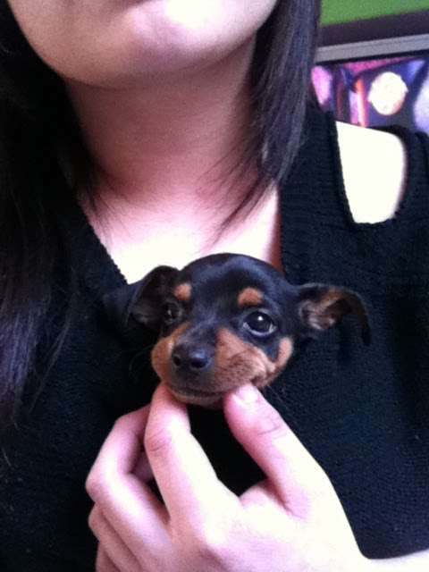

sunday
tonight's kitchen experiment was a little cheesecake mousse layered with strawberry compote. piped everything into glasses and finished them with pistachio cream and a chocolate drizzle.

visually very cute, but flavor-wise it leaned a little too sweet. next version probably gets lemon in the compote and only one drizzle instead of two.
this isn't really a new discovery, but recently i had space to actually sit with the thought.
an internet stranger sent me an unsolicited photo of his penis and then casually informed me that my instagram pictures had "helped him finish."
which led me down a strange line of thinking.
because the photos in question were just normal selfies. not suggestive ones. just me thinking about lighting, angles, and whether my eyeliner looked even that day.
yet somewhere in the digital wilderness a man had apparently formed enough of an attachment to those images to have a very personal experience about them.
what fascinated me wasn't even the act itself, but the mindset.
because at least for me, the idea of using someone's photos that way without explicit consent feels... almost like a violation. it just doesn't occur to me as a neutral activity.
in the age of ai, you can actually ask about this kind of behavior. so i did.
the explanation was something like: familiarity, emotional proximity, imagination filling in the gaps. the brain tends to react more strongly to someone it perceives as "real" than to anonymous content.
which makes sense from a behavioral standpoint.
however, observing the phenomenon in its natural habitat still produces the same reaction one might have while watching an unusual animal behavior through laboratory glass:
a long pause.
a few notes scribbled in the margin.
and the quiet scientific question:
why are you like this.
